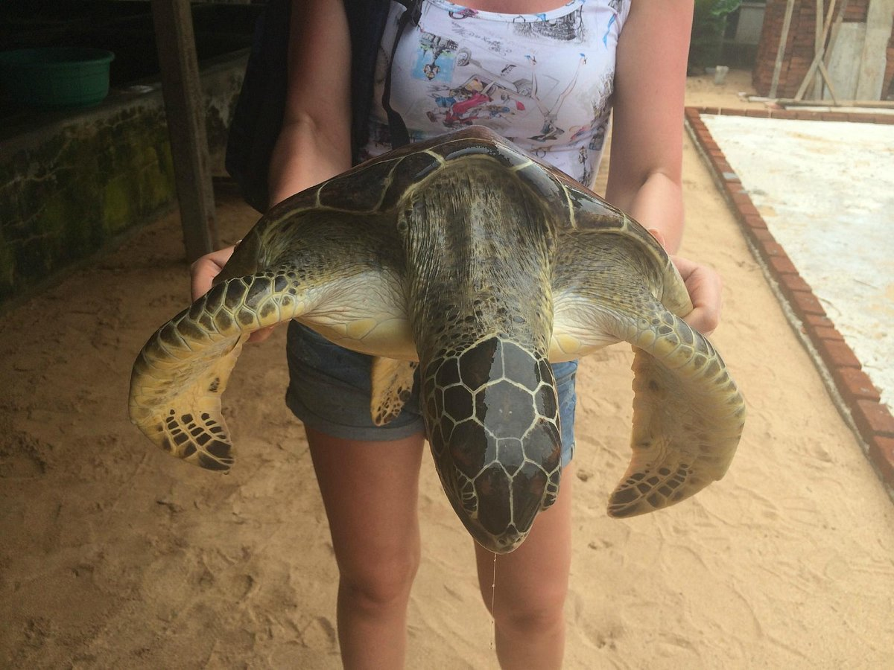

SEA TURTLE HATCHERY AND RESCUE CENTRE
The sea turtle hatchery in Sri Lanka works to safeguard and save the sea turtles who travel to the island's golden coasts, from treating sick or injured turtles to providing a secure breeding area.
MISSION
The Sea Turtle Hatchery and Rescue Center is located a few kilometers north of the main Hikkaduwa town.
with the goal towards protecting some of the globally endangered turtle species.
HISTORY OF SEA TURTLES
The existence of sea turtles dates back millions of years.
Sea turtles are especially vulnerable to both natural and manmade hazards, despite their long history.
The sea turtle hatchery in Sri Lanka strives to safeguard and save the sea turtles that visit the island's golden coasts,
from rehabilitating injured sea turtles to providing a safe nesting habitat.
It typically requires about two days for eggs to hatch

Visitors are able to observe turtle eggs that were safely buried in the sand hatchery.
Turtles are treated very tenderly and with extreme concern for their appropriate development so that they can be securely released into the sea and live in their natural environment.

Visitors can witness turtles of various sizes; turtles must develop in order to be released and live on their own.
Visitors will also be able to witness turtles with deformed bodily parts, such as those lacking forelegs or rear legs.